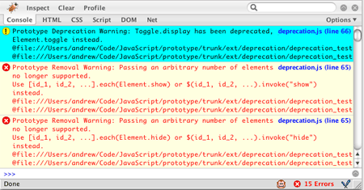

If you’ve put off the task of upgrading your old code to the latest stable release of Prototype, now you’re out of excuses. Since version 1.6, Prototype comes with with an update helper that will warn you of any deprecations or API changes.
The script is meant to be used with Firebug, so it’s Firefox-only for the moment — but when you’re done, your code will be ready for use alongside the latest version of Prototype in all browsers.

Using the script is easy. To migrate a page to the current version of Prototype:
script tag that references prototype.js. Change the path to point to the latest version of Prototype (or else overwrite the existing prototype.js with the new version).script tag that references prototype_update_helper.js. When your code calls a method that’s been deprecated, replaced, or modified, the script will log a warning or error to your Firebug console. Clicking its hyperlink will take you to the update helper script itself, which isn’t all that helpful; but the message itself will contain a stack trace that points to the source of the error.
Naturally, the console errors are the most important to address, since they represent things that will no longer work in the latest version of Prototype. The warnings represent deprecations — things that still work in the latest version, but are not guarateed to work in future versions of Prototype. If you’d like to see only removal notices, you can set a property in your code to turn off deprecations:
prototypeUpdateHelper.logLevel = UpdateHelper.Warn;As you address these errors and warnings, they’ll go away. When there are no more errors, your code is compatible with the current version of Prototype. When there are no more warnings, your code is nimble and future-proof.